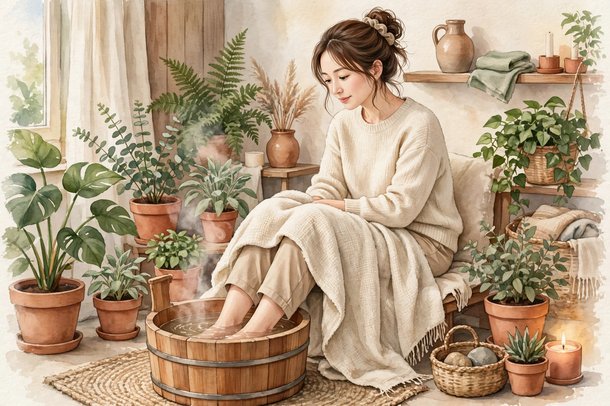

妊活と冷え｜東洋医学ではどう考えるか
「妊活には冷えがよくない」とよく聞きます。では、東洋医学では冷えをどう捉えているのでしょうか。冷えの見立てと、毎日の暮らしでできる温め方を、鍼灸師の視点で整理します。

冷えは「病名」ではなく、体の状態の捉え方
西洋医学に「冷え性」という正式な病名はありません。手足が冷たい、お腹が冷える、腰まわりがひんやりする。こうした感覚は検査の数値には表れにくく、「気のせい」と片づけられてしまうこともあります。
一方、東洋医学では、冷えは体からの大切なサインとして扱います。体のどこが冷えているか、どんなときに冷えるか、ほかにどんな不調を伴うかを見ながら、その人の体の状態全体を読み解く手がかりにするのです。妊活中の方にとっても、冷えは「自分の体の状態を知る入口」になります。
東洋医学の見立て1：気と血の「巡り」
東洋医学では、体の中を「気（エネルギー）」と「血（栄養とうるおい）」が巡っていると考えます。温かさは、この巡りによって全身へ運ばれます。
- 気が不足している（気虚）：温める力そのものが弱く、疲れやすく、手足が冷えやすい状態
- 血が不足している（血虚）：末端まで届ける材料が足りず、指先の冷えや顔色の冴えなさにつながる状態
- 巡りが滞っている（瘀血・気滞）：材料はあっても流れが悪く、下腹部の張りや肩こりを伴いやすい状態
同じ「冷え」でも、背景にある状態は人それぞれです。だからこそ、温め方も一律ではなく、自分のタイプを知ることが近道になります。
東洋医学の見立て2：足腰の冷えと「腎」
東洋医学には五臓（肝・心・脾・肺・腎）という考え方があり、このうち「腎」は成長や生殖、ホルモンの働きと深く関わる土台とされています。腰や足の冷え、夜中のトイレの近さ、疲れが抜けにくい状態は、腎の弱りのサインとして捉えることがあります。
妊活の文脈で「足腰を冷やさないように」と言われるのは、この考え方が背景にあります。骨盤の内側にある子宮や卵巣は体の中心部ですから、お腹と腰を温かく保つことは、東洋医学でも西洋医学でも共通して勧められる生活習慣です。
日常でできる温め方
特別なことより、続けられる小さなことの積み重ねが大切です。
- 足湯：くるぶしまで浸かる10〜15分の足湯は、全身の巡りを助ける手軽な方法です
- 食事：冷たい飲み物ばかりにせず、温かい汁物を一品添える。生姜や根菜など、体を温める食材を取り入れる
- 服装：お腹と腰、足首を冷やさない。締めつけの強い下着は巡りの妨げになります
- 運動：筋肉は体の中で熱を作る工場です。ウォーキングなどの軽い運動を習慣に
- 睡眠：巡りを整える基本は睡眠です。湯船に浸かってから布団に入ると、入眠もスムーズになります
冷えの背景に病気が隠れることも
大切な注意点があります。強い冷えや月経の異常の背景に、甲状腺の病気や婦人科の病気が隠れていることもあります。東洋医学の見立ては体の状態を整えるためのものですが、気になる症状があるときは、まず医療機関で検査を受けることが先です。妊活中の方は、かかりつけの婦人科と相談しながら進めてください。
自分の冷えタイプを知る目安
冷えの背景にある状態は人それぞれです。次の傾向は、東洋医学の見立てで自分のタイプを知る目安になります。自己判断のためのものではありませんが、生活の整え方を考える手がかりになります。
- 疲れやすく、手足が冷える：気が不足しているタイプ。温める力自体が弱いため、睡眠と食事で気を補うことが先になります
- 指先が冷え、顔色が冴えない、月経の血の色が薄い：血が不足しているタイプ。鉄分を含む食事と休息で血を養うことが力点です
- 下腹部が張りやすく、肩こりや月経痛を伴う：巡りが滞っているタイプ。温めるだけでなく、軽い運動で巡らせることが大切です
- 腰や足が冷え、夜中にトイレで起きる、疲れが抜けにくい：腎が弱っているタイプ。足腰を冷やさず、無理のない生活リズムを守ることが基本です
実際には複数のタイプが重なっていることがほとんどです。サロンのカウンセリングでは、こうした傾向を一緒に整理しながら、その方に合ったケアを組み立てます。
温活の一日の流れ（一例）
朝：白湯を一杯飲んで内側から温める。朝食は温かい汁物を添えて抜かない。
昼：冷たい飲み物は控えめに。一駅歩くなど、軽く体を動かして巡りを作る。
夜：湯船にゆっくり浸かるか、時間がない日は足湯で代用。寝る前は腹巻きやレッグウォーマーで、お腹と足首を冷やさない。
どれも特別な道具のいらないことばかりです。大切なのは、頑張って一度に変えるのではなく、続けられる形で生活に組み込むことです。
冷え対策でよくある3つの誤解
- 「厚着をすれば十分」：重ね着は大切ですが、外側を温めるだけでは熱を作る力は育ちません。食事、運動、睡眠で「自分で熱を作れる体」を支えることが土台です
- 「熱いお風呂に長く入るほどよい」：熱すぎる湯と長湯は、のぼせや疲労の原因になります。気持ちよいと感じる温度でゆっくり温まる方が、巡りの面でも続きます
- 「体を温める食材だけ食べればよい」：食材の温冷は補助的な考え方です。偏った食事はかえって栄養バランスを崩します。全体のバランスの中で温かい食べ方を選ぶことが大切です
冷えと月経の変化は一緒に見る
冷えの相談では、月経の様子もあわせてうかがいます。月経周期が長くなってきた、経血の量や色が変わった、月経痛が強くなってきた。こうした変化は、東洋医学では気や血、腎の状態の変化として読み解きますが、同時に婦人科の病気のサインであることもあります。
目安として、月経の間隔が大きく乱れる、痛みで日常生活に支障が出る、経血量が急に増えたといった変化があるときは、温活の工夫より先に婦人科の受診を優先してください。体の状態を整えるケアは、検査で大きな問題がないことを確認してからでも遅くありません。
まとめ
冷えは、東洋医学では気と血の巡りや腎の状態を映すサインです。タイプに合わせた温め方を知り、毎日の暮らしの中で少しずつ整えていくことが、妊活中の体づくりの土台になります。次のコラムでは、月経周期に合わせた過ごし方を、気・血・水の考え方から解説します。
妊活ケアサロン ムスビ 梅田（近日開院予定）
ムスビは大阪・梅田の女性専用サロンです。オイルマッサージと美容整体、耳ツボシードで、冷えや疲れなど妊活中に重なりやすい不調に寄り添います。現在は開院準備中で、予約受付はまだ開始していません。開始時期はトップページでお知らせします。
この記事は、東洋医学の一般的な考え方を紹介する情報提供であり、診断や治療の案内ではありません。妊娠や治療の結果をお約束するものでもありません。体調に不安がある場合は、医療機関にご相談ください。